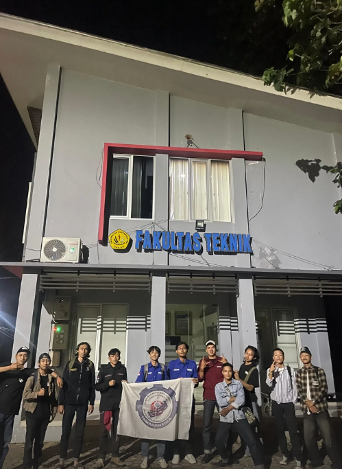
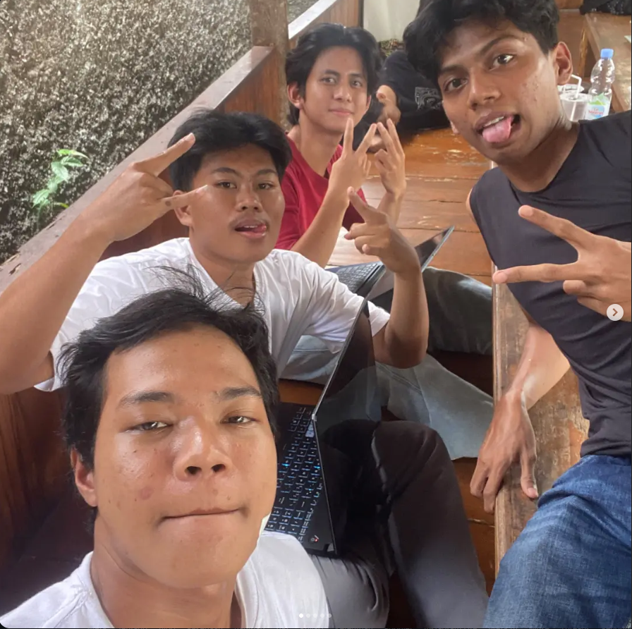

01 / VISUAL JOURNAL
Stories in
every frame.
Gambar bisa menyimpan suasana, ide, dan cerita tanpa harus menjelaskan semuanya dengan kata-kata.
SELECTED COLLECTION
06 FRAMES
Visual collection

01 / BARUDAK TEKNIK ↗
02 / FRIENDS ↗ 03 / MEMORIES ↗ 04 / MOMENTS ↗ 05 / FRIENDSHIP ↗ 06 / TOGETHER ↗GARANTENG
Setiap gambar punya ceritanya sendiri.
Kenali pemilik galeri ↗